13キャンセル・変更破棄・入力クリア
保存せず戻る場合は、変更を破棄するか確認します。
手順一覧を開く（12手順）
編集を終える・続ける
1未保存のまま編集を終える場合
画面上部が［未保存の変更あり］の状態で［キャンセル］を押します。
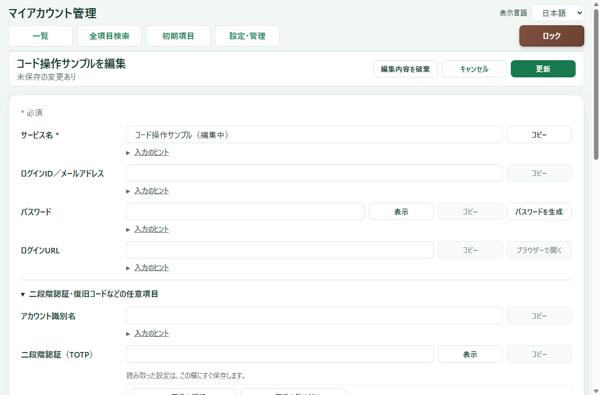
2変更を残すか選ぶ
確認の［キャンセル］は入力を保持して編集を続けます。［変更を破棄］は保存せず離れます。
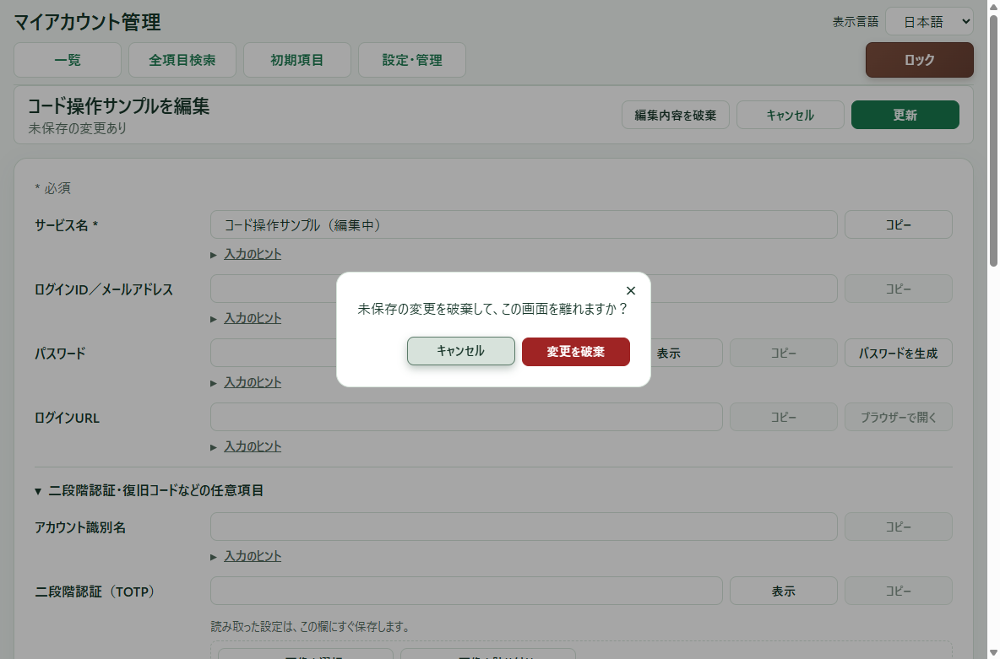
3編集を続ける場合
確認の［キャンセル］を押すと、変更中の値がそのまま残ります。
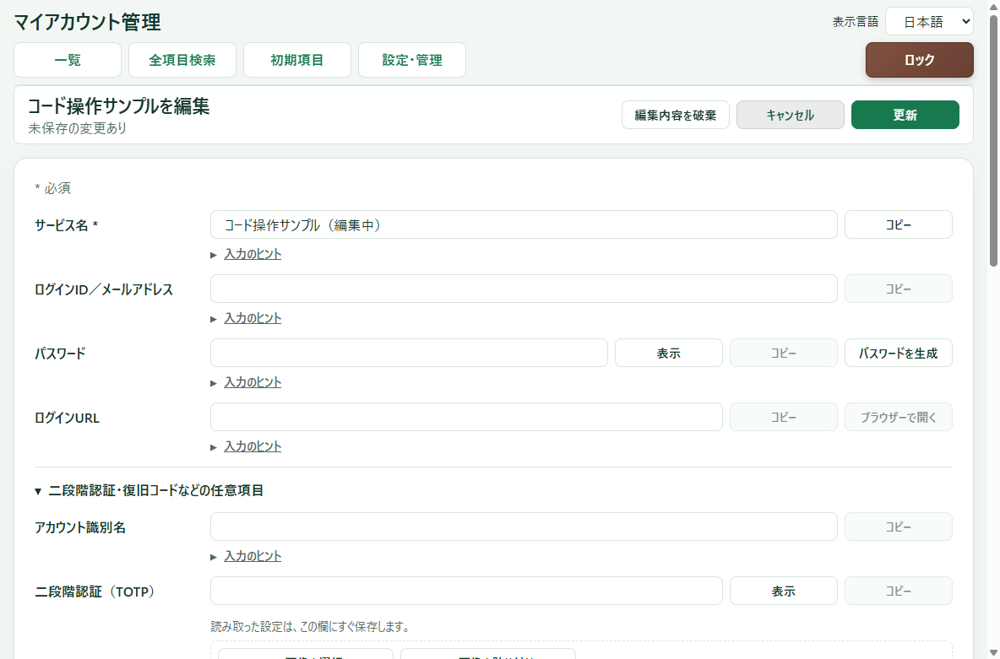
4保存せず離れる場合
改めて画面上部の［キャンセル］を押し、確認で［変更を破棄］を選びます。
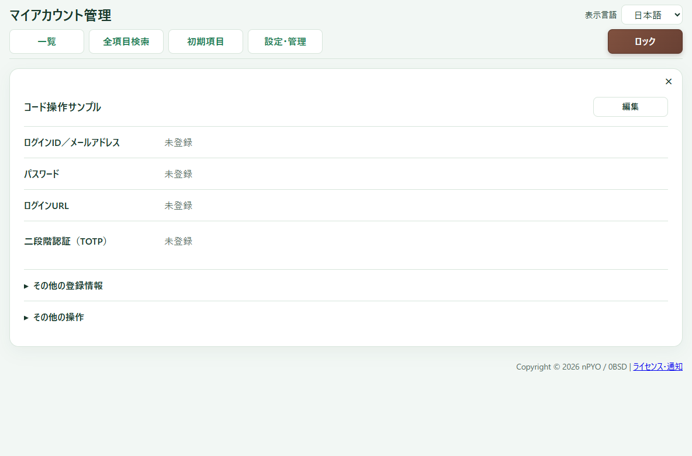
画面に留まって変更を破棄
5編集画面に留まって変更を捨てる
［未保存の変更あり］のとき［編集内容を破棄］を押します。
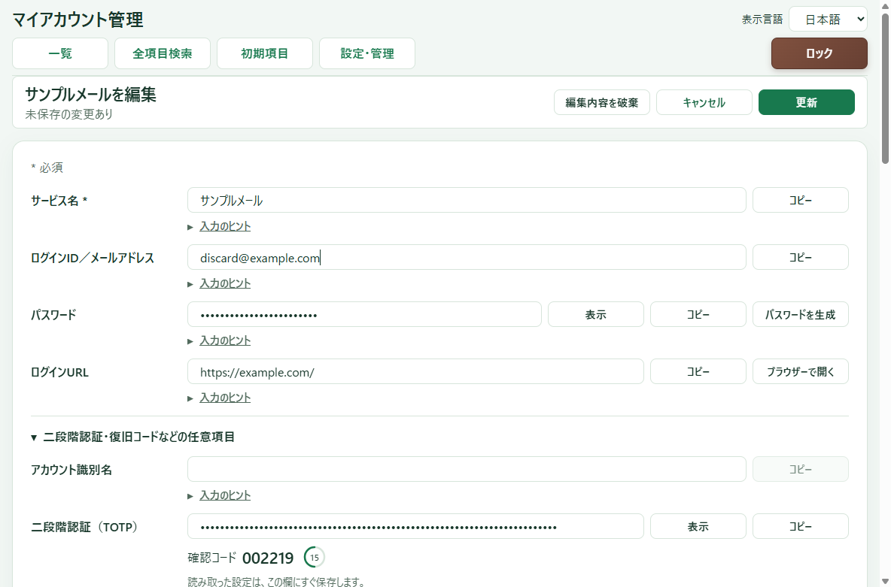
6破棄を確認
［変更を破棄］を押します。
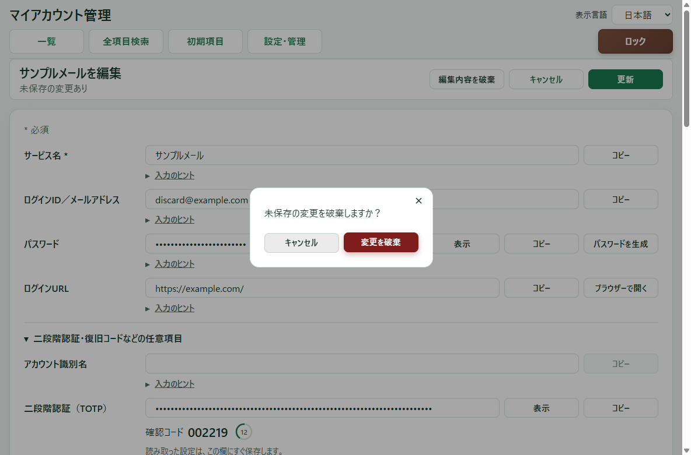
7保存済みの値へ戻る
編集画面のまま、最後に保存した内容へ戻ります。
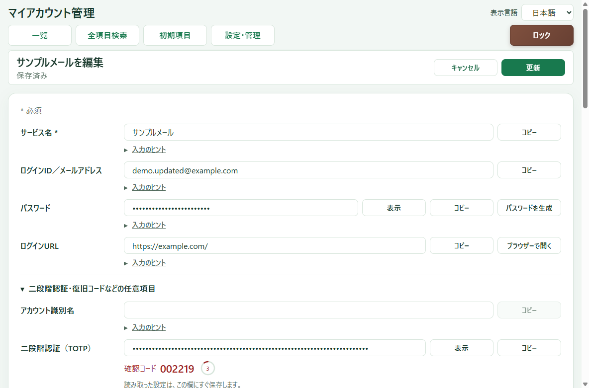
8変更せず編集を終える
未保存の変更がない状態で［キャンセル］を押すと、詳細へ戻ります。
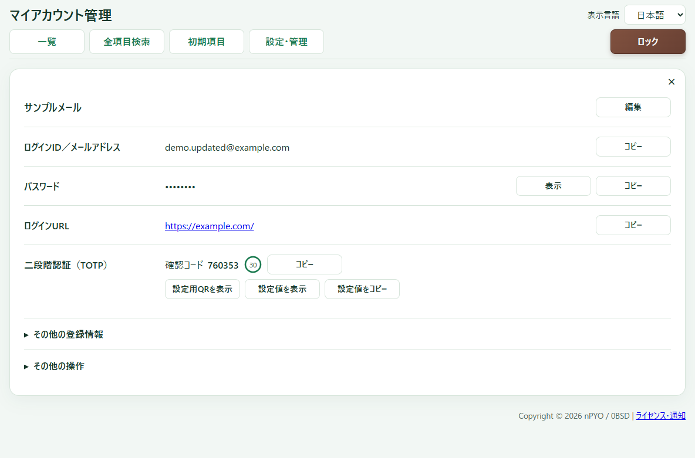
新規入力をクリア
9新規入力をやり直す
追加画面で入力した内容を全部消す例です。保存前の入力だけを対象にします。
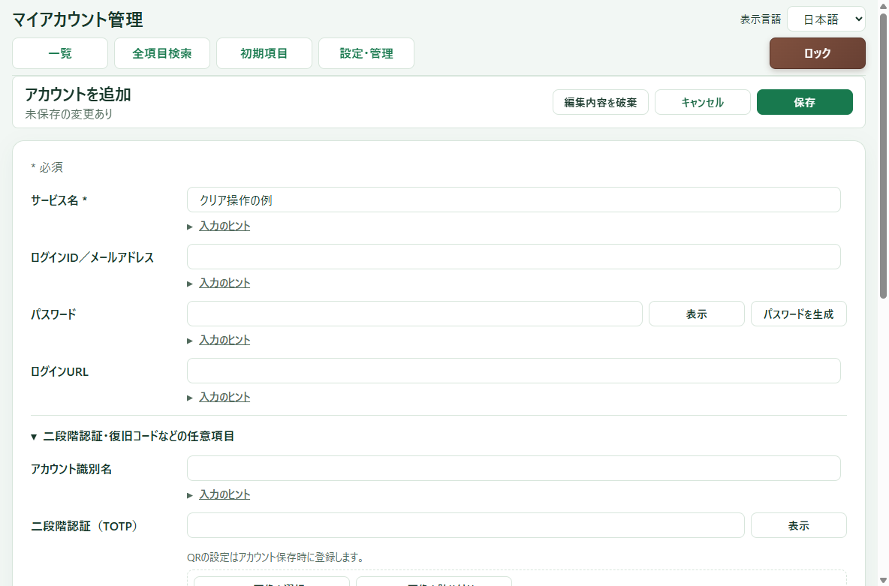
10下の［クリア］を押す
追加画面の下へスクロールして［クリア］を押します。
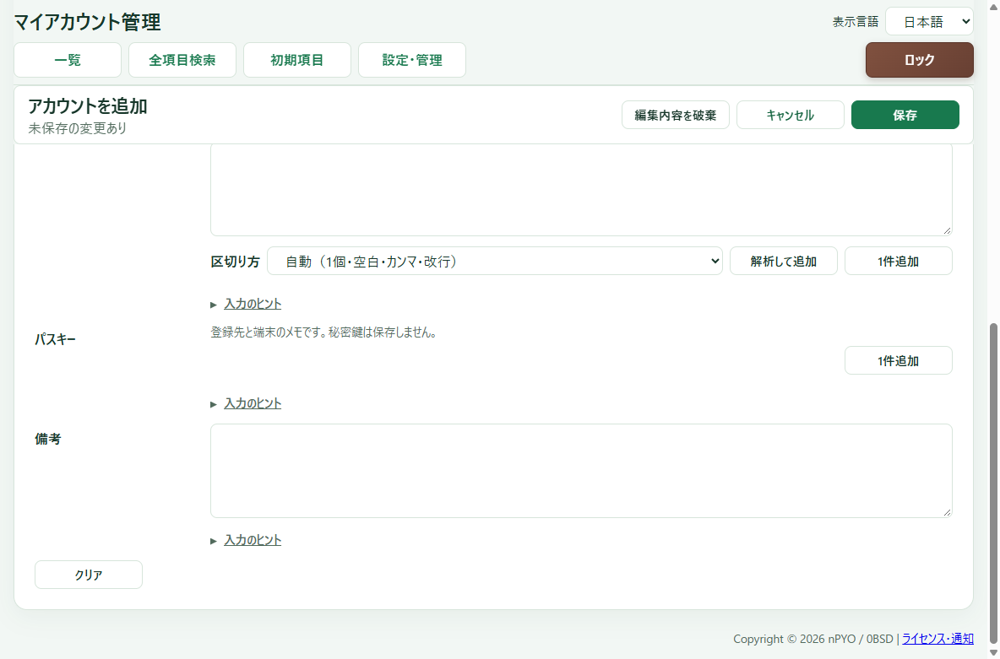
11新規入力の消去を確認
確認画面で［クリア］を押します。
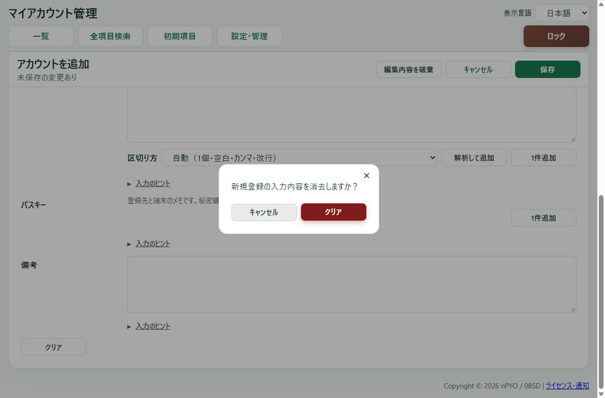
12空欄へ戻ったことを確認
入力欄が空になり、［新規登録］の状態へ戻ります。
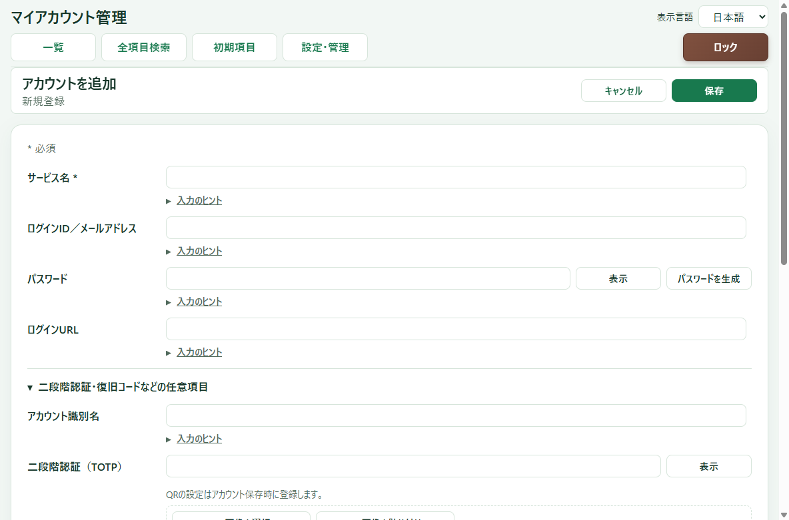